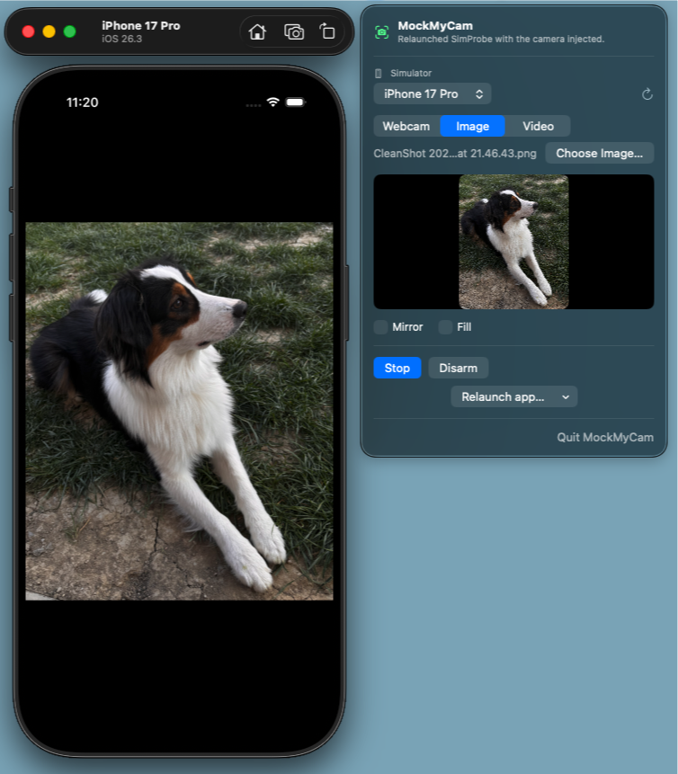

A fake camera
for the iOS Simulator.
The Simulator has no camera — so your app sees a black screen. MockMyCam injects one: stream your Mac's webcam live, or feed in an image or looped video. No code changes in your app.
Free & open source. Apple Silicon Mac, macOS 14+, Xcode 16+.
webcam / image / video → BGRA frames → /tmp/SimCam.bgra (mmap) → VirtualCamera.dylib → your app's AVFoundation
Three sources, one shared frame
Pick what the Simulator's camera should "see." Switch live — the feed updates instantly.
Live webcam passthrough
Stream your Mac's FaceTime or any connected camera straight into the Simulator in real time.
Mock a still image
Upload a photo and the camera shows that frame — perfect for demos, screenshots, and deterministic tests.
Loop a video
Feed a looped clip to simulate motion — scanning a document, a face moving, a scene panning by.
Lives in your menu bar
No dock clutter, no window juggling. Pick a simulator, choose a source, hit Arm.
No changes to your app
It hooks AVFoundation at runtime via DYLD injection. Your camera code stays exactly as it ships.
Free & open source
Apache-2.0 licensed. Read the code, build it yourself, extend the hooks.
How it works
Shared memory
MockMyCam writes BGRA frames into a memory-mapped file at /tmp/SimCam.bgra. The Simulator's /tmp is the host's /private/tmp — same bytes, both sides.
Dylib injection
It injects VirtualCamera.dylib via simctl … DYLD_INSERT_LIBRARIES, which swizzles AVCaptureVideoPreviewLayer, photo capture, and the image picker.
Your app renders it
The dylib reads each frame and draws it wherever the app shows the camera. Your code thinks it's talking to a real one.
The dylib is vendored from baguette (Apache-2.0) and built from source.
See it in action
The menu bar and a live feed running side by side in the iOS Simulator.

Quick start
- 1
Boot a simulator and open the menu-bar icon, then pick that simulator from the dropdown.
- 2
Choose a source — Webcam, Image, or Video — and hit Start. You'll see a live preview of the outgoing feed.
- 3
Arm — this installs and injects the dylib into your selected simulator.
- 4
Relaunch your app (from the menu or Xcode). It comes back with the camera injected. Done.
Prefer to build from source?
# builds dylib + release app make app # launches it make run
Downloaded build won't open?
The app isn't notarized yet, so Gatekeeper quarantines it. After moving it to Applications:
xattr -dr com.apple.quarantine /Applications/MockMyCam.app
Free & open source
MockMyCam is free and open source, built in spare time. If it saves you some, a coffee on Ko-fi keeps it going — or a GitHub star helps others find it.